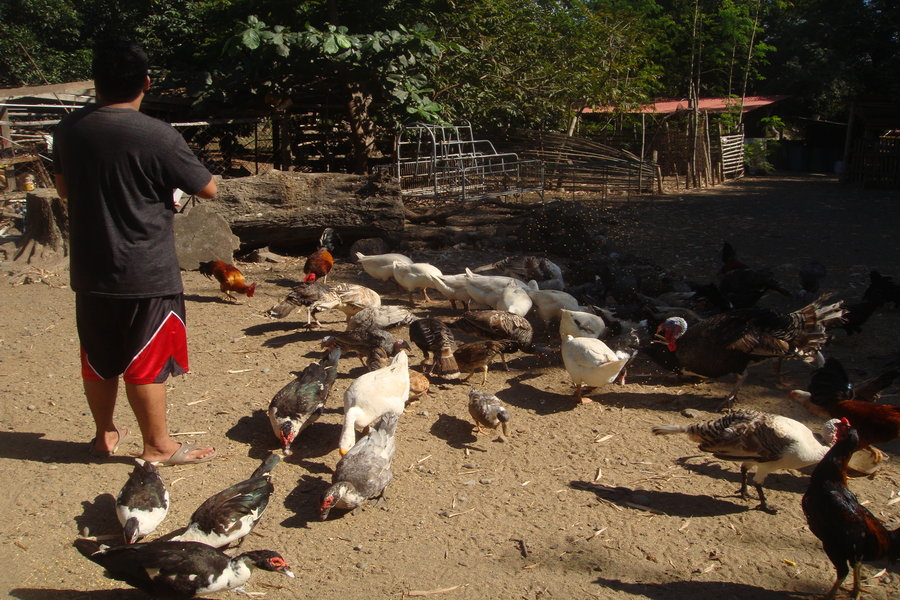

Household
Household animals are more commonly known as pets. They serve as companions of their owners mostly for the reason of fulfilling an emotional need. Each animal usually has food exclusively made for them. One can simply ask their local pet shop what to feed to their animal buddies and buy those from them.
Livestock
These are the domesticated animals we often see in farms or in rural areas. They are one of our sources of food such as meat and milk. Other than that, they may also provide labor to help farmers tend their crops.
